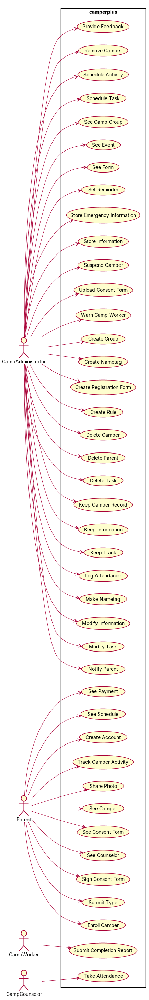
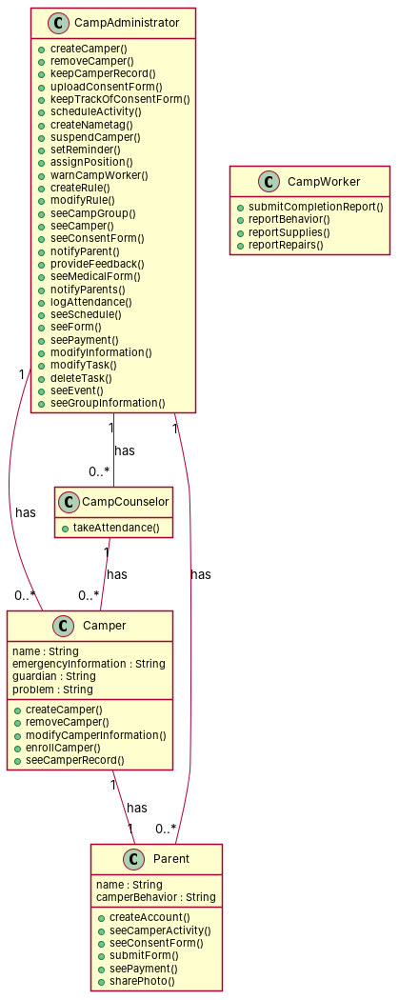

R1: As a camp administrator, I want to be able to add campers, so that I can keep track of each individual camper. R2: As a camp administrator, I want to be able to remove campers if they don't attend the camp anymore, so that I can keep the records organized. R3: As a camp administrator, I want to be able to keep camper records from previous years, so that the amount of work I need to do is lowered. R4: As a camp administrator, I want to be able to upload consent forms, so that campers or their parents can easily access the forms. R5: As a camp administrator, I want to be able to keep track of which camper submitted which forms, so that legal issues are avoided. R6: As a camp administrator, I want to be able to schedule activities for campers, so that camp workers can easily keep track of who is where at all times. R7: As a camp administrator, I want to be able to automatically create nametags for campers, so that I can lower the amount of work I need to do. R8: As a camp administrator, I want to be able to suspend a camper who had behavioral problems. R9: As a camp administrator, I want to be able to set a reminders related to specific tasks that has to be done. R10: As a camp administrator, I want to be able to assign different positions to the staff members, so that it is possible to organize activities in terms of responsibilities. R11: As a camp administrator, I want to be able to warn a camp worker who I think did his/her job inappropriate. R12: As a camp administrator, I want to be able to create, modify rules that campers and camp workers has to follow. R13: As a camp administrator, I want to keep track of the usage of internal camp facilities, so that I don't create conflicting schedules for the different camp groups. R14: As a camp administrator, I want to create an avenue so parents can submit feedback and general concerns, so that I can keep improving the services I provide. R15: As a camp administrator, I want to store campers' emergency information in a database, so that I can easily notify the necessary parties in case of an emergency. R16: As a camp administrator, I want to store camper's immediate parent/guardian's information, so that I can easily call to notify them in case a grossly unacceptable behavior. R17: As a camp administrator, I want to provide bi-weekly feedback to camper's parents, so that they can be aware of their camper behavior and performance at camp. R18: As a camp administrator, I want to be able to make nametags faster, so that I don't have to spend two hours making 200+ nametags R19: As a camp administrator, I want to be able to create a registration form for both staff and kids, so that I can keep organized. R20: As a camp administrator, I want to be able to keep my information in one place, so that the admins next year can improve on the previous years. R21: As a camp administrator, I want to be able to see medical forms, so that we can be prepared for an allergy attack R22: As a camp administrator, I want to be able to notify parents all at once, so that they can be notified of any upcoming events. R23: As a camp administrator, I want to be quickly log attendance everyday, so that I can track which kids are coming in. R24: As a camp administrator, I want to be able to add parents, so that they can enroll their kids at camp. R25: As a camp administrator, I want to be able to create groups and add campers to the groups, so that I can easily organize the campers. R26: As a camp administrator, I want to be able to see all my camp groups and the events scheduled for each camp group, so that I can notify counselor of what their group will be doing for the day. R27: As a camp administrator, I want to be able to schedule tasks/activities for a specific camp group, so that I can track each groups daily/weekly and monthly activities. R28: As a camp administrator, I want to be able to delete tasks/activities I scheduled, so that I can keep the schedule clean of unneeded activities. R29: As a camp administrator, I want to be able to modify tasks/events I scheduled in case there is a change, so that I can always keep the schedule up to date. R30: As a camp administrator, I want to be able to modify the information of enrolled campers, so that I can keep the campers information up to date. R31: As a camp administrator, I want to be able to delete campers from the database, so that I can keep my pages free of clutter. R32: As a camp administrator, I want to be able to modify the information of added parents, so that I can keep parent's information up to date. R33: As a camp administrator, I want to be able to delete parents from the database, so that I can keep my pages free of unneeded clutter. R34: As a camp administrator, I want to be able to modify a group's information, so that I can keep the groups up to date. R35: As a camp administrator, I want to be able to see only events for a specific group/groups on the event calendar, so that I can easily read the data on the calendar without too much clutter. R36: As a parent, I want to be able to see which consent forms I have submitted, so that I can know what I still need to do. R37: As a parent, I want to be able to track my camper activity and schedule at camp, so that I can have peace of mind. R38: As a parent, I want to be able to submit various type of forms to the camp management. R39: As a parent, I want to be able to create an account, so that I can sign up my kids for camp online. R40: As a parent, I want to see which counselors are assigned to my kids, so that I can have peace of mind. R41: As a parent, I want to be able to message my camper counselors, so that I can voice my concerns or check on my camper progress. R42: As a parent, I want to be able to sign and submit consent forms online, so that I don't have to deal with my camper losing a consent form. R43: As a parent, I want to be able to see if I made all the necessary payments. R44: As a parent, I want to be able to share any photos the camp has taken of my camper. R45: As a parent, I want to be able to connect with the staff in case of an emergency. R46: As a parent, I want to be able to enroll my campers, so that they can be admitted to camp. R47: As a parent, I want to be able to see and edit my enrolled campers to the camp year, so that I can know who I already enrolled to camp, who is still pending admission etc. R48: As a parent, I want to be able to see a schedule of the activities my campers are involved in at camp, so that I can be more informed as to what they are doing at camp. R49: As a camp worker, I want to be able to see which campers I am in charge of and where, so that I can make sure I am doing my job properly. R50: As a camp worker, I want to submit a completion report for the tasks which was assigned to me. R51: As a camp worker, I want to report a camper to the manager with an inappropriate behavior. R52: As a camp worker, I want to report a list of supplies to the manager that the camp is short of. R53: As a camp worker, I want to report necessary repairs to the manager that the camp is needed of. R54: As a camp worker, I want to see which campers I am in charge of and where, so that I can make sure I am doing my job properly. R55: As a camp counselor, I want to take attendance of my assigned kids, so that I can make ensure everybody is accounted for.
Red, struck-through: removed by ambiguity removal; green: added.
| actors (4 → 4) |
|---|
| camp administrator |
| camp counselor |
| camp worker |
| parent |
| classes (34 → 33) |
|---|
| Activity |
| Attendance |
| Behavior |
| Camp |
| CampAdministrator |
| CampCounselor |
| CampGroup |
| CampWorker |
| Camper |
| Charge |
| Clutter |
| Concern |
| ConsentForm |
| Counselor |
| Database |
| Date |
| Emergency |
| Event |
| Feedback |
| Form |
| Group |
| Job |
| Kid |
| Manager |
| Nametag |
| Parent |
| Peace |
| PerformanceAtCamp |
| Schedule |
| Staff |
| Task |
| Track |
| Work |
| Year |
| attributes (5 → 5) |
|---|
| Camper.emergency information |
| Camper.guardian |
| Camper.problem |
| Parent.camper behavior |
| Work.amount |
| relations (7 → 7) |
|---|
| association: Counselor -> Kid |
| generalization: PerformanceAtCamp -> Parent |
| has: Activity -> Schedule |
| has: Camper -> Parent |
| has: Camper -> Track |
| has: Event -> Group |
| has: Kid -> Attendance |
| id | req | type | cue | status | readings / explanation |
|---|---|---|---|---|---|
| A1 | R4 | referential | their | resolved | parents' consent forms; campers' consent forms The phrase 'their parents' or 'their' is ambiguous, referring to either parents or campers. |
| A6 | R22 | quantifier | any | resolved | notify all parents at once; notify parents of a specific group at once The term 'any' is ambiguous, referring to either all parents or parents of a specific group. |
| A12 | R35 | quantifier | much | resolved | events for a specific group; events for multiple groups The term 'specific group/groups' is ambiguous, referring to either a single group or multiple groups. |
| A13 | R38 | terminological | various | resolved | submit various types of forms; submit a specific type of form The term 'various' is ambiguous, referring to either multiple types of forms or a single type of form. |


"""Code skeleton generated from the shared model of D1/camperplus.
Every class and method records the requirement(s) it traces to."""
from __future__ import annotations
import dataclasses as _dc
import enum as _enum
import typing as _t
@_dc.dataclass
class Camper:
"""Source: R1, R24, R37, R46, R47"""
name: _t.Optional[str] = None
emergencyInformation: _t.Optional[str] = None
guardian: _t.Optional[str] = None
problem: _t.Optional[str] = None
parent: _t.Optional["Parent"] = None
def createCamper(self) -> None:
"""Operation."""
raise NotImplementedError
def removeCamper(self) -> None:
"""Realizes UC6 "Delete Camper" (R31)."""
raise NotImplementedError
def modifyCamperInformation(self) -> None:
"""Realizes UC15 "Modify Information" (R30, R32, R34)."""
raise NotImplementedError
def enrollCamper(self) -> None:
"""Realizes UC9 "Enroll Camper" (R46)."""
raise NotImplementedError
def seeCamperRecord(self) -> None:
"""Realizes UC10 "Keep Camper Record" (R3)."""
raise NotImplementedError
@_dc.dataclass
class Parent:
"""Source: R24, R39, R40, R41, R43, R44"""
name: _t.Optional[str] = None
camperBehavior: _t.Optional[str] = None
def createAccount(self) -> None:
"""Realizes UC1 "Create Account" (R39)."""
raise NotImplementedError
def seeCamperActivity(self) -> None:
"""Realizes UC23 "See Camper" (R47, R49, R54)."""
raise NotImplementedError
def seeConsentForm(self) -> None:
"""Realizes UC24 "See Consent Form" (R36)."""
raise NotImplementedError
def submitForm(self) -> None:
"""Realizes UC36 "Submit Type" (R38)."""
raise NotImplementedError
def seePayment(self) -> None:
"""Realizes UC28 "See Payment" (R43)."""
raise NotImplementedError
def sharePhoto(self) -> None:
"""Realizes UC31 "Share Photo" (R44)."""
raise NotImplementedError
@_dc.dataclass
class CampAdministrator:
"""Source: R2, R3, R4, R5, R6, R7, R8, R9, R10, R11, R12, R13, R14, R15, R16, R17, R18, R19, R20, R21, R22, R23, R25, R26, R27, R28, R29, R30, R31, R32, R33, R34, R35, R36, R38, R42, R45"""
campers: _t.List["Camper"] = _dc.field(default_factory=list)
parents: _t.List["Parent"] = _dc.field(default_factory=list)
campCounselors: _t.List["CampCounselor"] = _dc.field(default_factory=list)
def createCamper(self) -> None:
"""Operation."""
raise NotImplementedError
def removeCamper(self) -> None:
"""Realizes UC6 "Delete Camper" (R31)."""
raise NotImplementedError
def keepCamperRecord(self) -> None:
"""Realizes UC10 "Keep Camper Record" (R3)."""
raise NotImplementedError
def uploadConsentForm(self) -> None:
"""Realizes UC40 "Upload Consent Form" (R4)."""
raise NotImplementedError
def keepTrackOfConsentForm(self) -> None:
"""Realizes UC12 "Keep Track" (R5, R13)."""
raise NotImplementedError
def scheduleActivity(self) -> None:
"""Realizes UC20 "Schedule Activity" (R6)."""
raise NotImplementedError
def createNametag(self) -> None:
"""Realizes UC14 "Make Nametag" (R18)."""
raise NotImplementedError
def suspendCamper(self) -> None:
"""Realizes UC37 "Suspend Camper" (R8)."""
raise NotImplementedError
def setReminder(self) -> None:
"""Realizes UC30 "Set Reminder" (R9)."""
raise NotImplementedError
def assignPosition(self) -> None:
"""Operation."""
raise NotImplementedError
def warnCampWorker(self) -> None:
"""Realizes UC41 "Warn Camp Worker" (R11)."""
raise NotImplementedError
def createRule(self) -> None:
"""Realizes UC5 "Create Rule" (R12)."""
raise NotImplementedError
def modifyRule(self) -> None:
"""Operation."""
raise NotImplementedError
def seeCampGroup(self) -> None:
"""Realizes UC22 "See Camp Group" (R26)."""
raise NotImplementedError
def seeCamper(self) -> None:
"""Realizes UC23 "See Camper" (R47, R49, R54)."""
raise NotImplementedError
def seeConsentForm(self) -> None:
"""Realizes UC24 "See Consent Form" (R36)."""
raise NotImplementedError
def notifyParent(self) -> None:
"""Realizes UC17 "Notify Parent" (R22)."""
raise NotImplementedError
def provideFeedback(self) -> None:
"""Realizes UC18 "Provide Feedback" (R17)."""
raise NotImplementedError
def seeMedicalForm(self) -> None:
"""Operation."""
raise NotImplementedError
def notifyParents(self) -> None:
"""Operation."""
raise NotImplementedError
def logAttendance(self) -> None:
"""Realizes UC13 "Log Attendance" (R23)."""
raise NotImplementedError
def seeSchedule(self) -> None:
"""Realizes UC29 "See Schedule" (R48)."""
raise NotImplementedError
def seeForm(self) -> None:
"""Realizes UC27 "See Form" (R21)."""
raise NotImplementedError
def seePayment(self) -> None:
"""Realizes UC28 "See Payment" (R43)."""
raise NotImplementedError
def modifyInformation(self) -> None:
"""Realizes UC15 "Modify Information" (R30, R32, R34)."""
raise NotImplementedError
def modifyTask(self) -> None:
"""Realizes UC16 "Modify Task" (R29)."""
raise NotImplementedError
def deleteTask(self) -> None:
"""Realizes UC8 "Delete Task" (R28)."""
raise NotImplementedError
def seeEvent(self) -> None:
"""Realizes UC26 "See Event" (R35)."""
raise NotImplementedError
def seeGroupInformation(self) -> None:
"""Operation."""
raise NotImplementedError
@_dc.dataclass
class CampCounselor:
"""Source: R49, R55"""
campers: _t.List["Camper"] = _dc.field
| python_compiles | True |
|---|---|
| java_compiles | True |
| attribute_mismatches | 0 |
| method_mismatches | 0 |
| use_cases | 41 |
| use_cases_without_actor | 0 |
| use_cases_without_method | 10 |
| actors_without_use_case | 0 |
| relations_to_unknown_class | 0 |
| inconsistencies | 10 |
| inconsistency_rate | 0.2 |
| requirement_coverage | 1.0 |
| validator fixes | |
| assumptions for open ambiguities | [] |
| element | P | R | F1 | TP/FP/FN |
|---|---|---|---|---|
| classes | 0.8 | 0.211 | 0.333 | 4/1/15 |
| relations | 0.2 | 0.038 | 0.065 | 1/4/25 |
| use_cases_provisional | 0.951 | 0.78 | 0.857 | 39/2/11 |